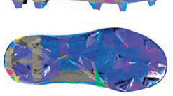
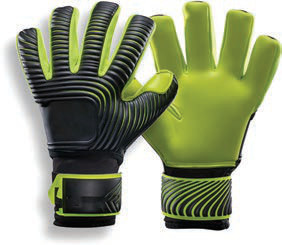
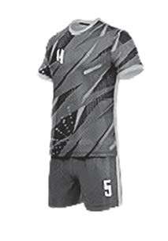

Equipment
To play football correctly, the following equipment are necessary:
 Football
Football

Football shoes Shin guards
Shin guards Socks
Socks
Goalkeeper gloves
JerseyBasic skills in football
To be able to play football well, a player must have the basic skills used in the game. These skills are essential for any player who wants to succeed in football. Among the basic skills in football are passing, receiving the ball, dribbling, shooting, and defending.